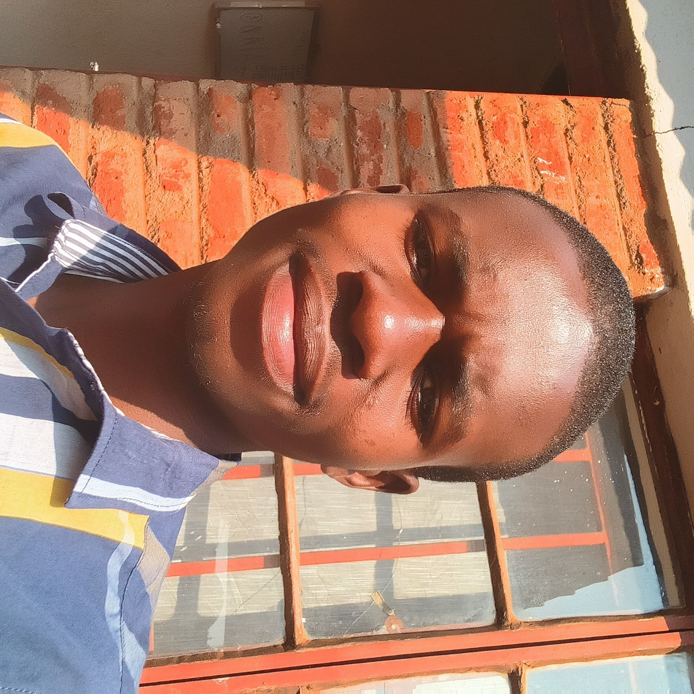
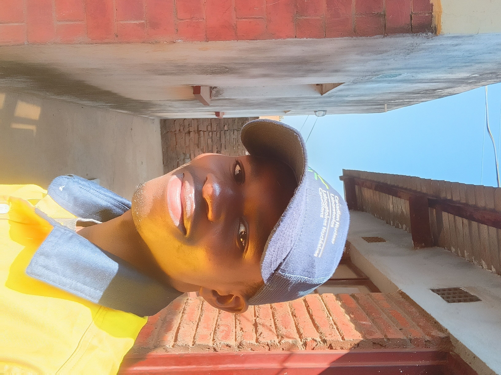
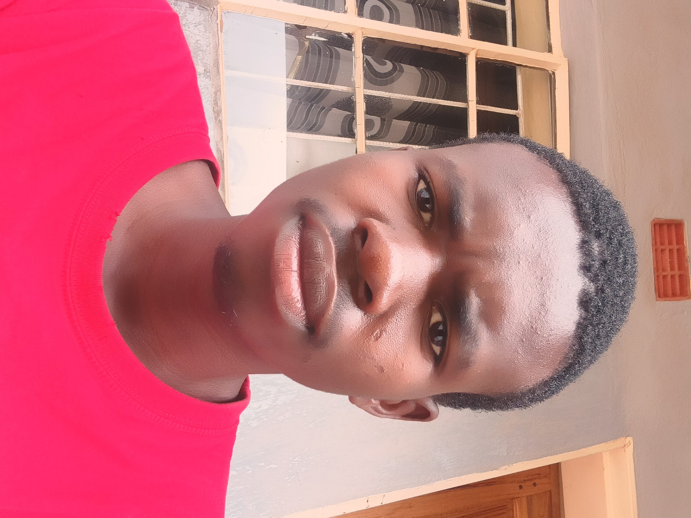
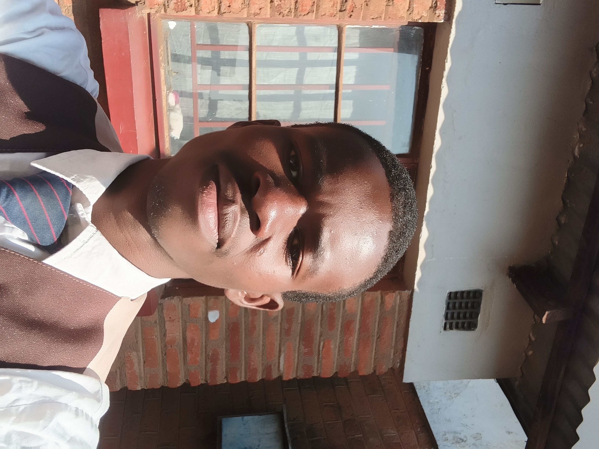

TECK XEDI · IDEAS · APPS · IMPACT
Building Malawi's Future Through Technology
Teck Xedi is a technology startup focused on creating software that solves real-world problems in education, healthcare, business and industry.




ABOUT THE FOUNDER
Meet The Founder
Gilbert Zeron Banda — Founder, Teck Xedi · Third-year student, Agricultural ExtensionGilbert Zeron Banda is a young entrepreneur and visionary builder from Malawi. He founded Teck Xedi with the belief that technology should solve everyday problems and create opportunities for future generations.
His mission is not only to build software but also to create lasting impact across education, healthcare, business and society. Alongside building Teck Xedi, Gilbert is a third-year student pursuing a degree in Agricultural Extension — a background that shapes how closely he ties his technology ideas to Malawi's real, everyday needs.
The problem
Everyday challenges in education, health, business and agriculture rarely have software built for the Malawian context.
The idea
Gilbert began designing focused, practical products — starting with tools for his own campus community at LUANAR.
The vision
Teck Xedi: a growing portfolio of ideas and apps built to create measurable impact across Malawi.
OUR MISSION
Why Teck Xedi Exists
Every product starts as an idea, becomes an app, and is measured by the impact it creates.
Ideas
We turn real problems into innovative ideas, grounded in what Malawians actually face day to day.
Apps
We build practical, scalable software — designed to work reliably in real Malawian conditions.
Impact
We create technology that improves lives — in education, healthcare, business and industry.
OUR VISION
Technology should not only solve today's problems but also anticipate tomorrow's possibilities.